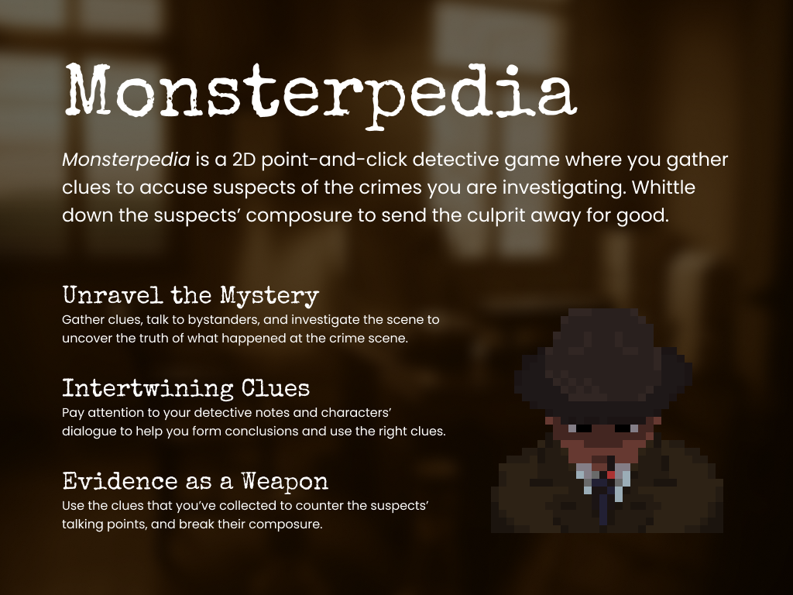
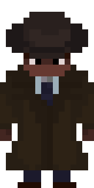
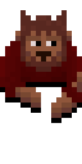

在开发初期，我们通过 One Pager 快速统一了团队的愿景：一款强调线索推理与心理博弈的 2D 点击解谜游戏。
在开发初期，我们通过 One Pager 快速统一了团队的愿景：一款强调线索推理与心理博弈的 2D 点击解谜游戏。

《Monsterpedia》是一款融合了超自然调查与社交战斗（Social Combat）的游戏。玩家扮演一名侦探，必须揭开看似普通犯罪背后的真实谜团。
作为该项目的开发者，我深刻理解了游戏系统必须为扩展性和团队协作做好规划。在开发过程中，我主导了底层架构的重构，解决了以下核心问题：
"通过这个项目，我最大的收获是对整体开发流程的把控感。—— William Su"
游戏采用了复古像素风格。为了凸显社交博弈（Social Combat）的紧张感，我们为每个嫌疑人和旁观者设计了极具个人特征的待机动画（Idle Cycle）。

Detective (Player)
Bartender (Bystander)

Werewolf (Suspect)